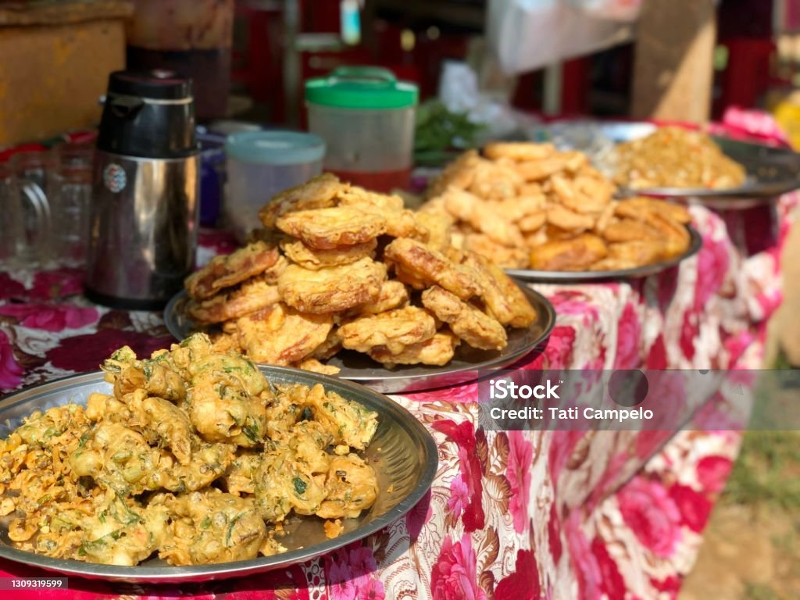
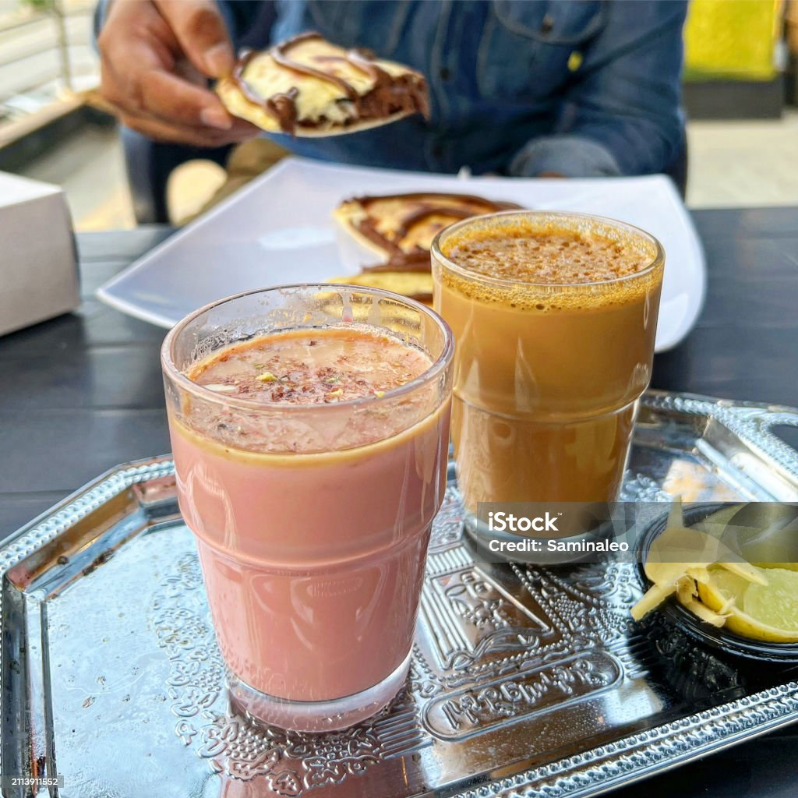

Food and Drinks

Curry and Rice
Chicken haleem, chicken karahi, biryani, beef nihari, curry pakora, chanay, aloo shimla mirch and keema isolated on grey background top view of pakistani and assorted indian spices food variety

Street Food
Pakoras are a popular Pakistani street food made by dipping vegetables like potatoes, onions, or spinach in spiced gram flour batter and deep-frying them. They are crispy, flavorful, and often served with tangy chutneys.

Drinks
Closeup shot of Kashmiri chai tea poured in a glass cup alongside Doodh Patti Chai Milk Tea served on a silver platter with man having chocolate calzone stuffed naan in the background.